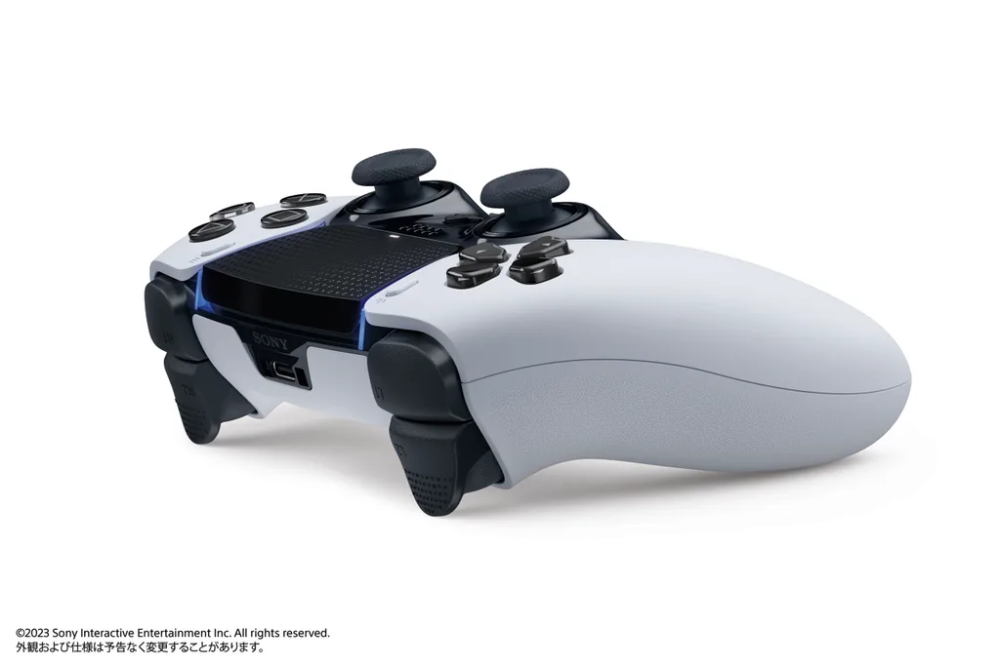
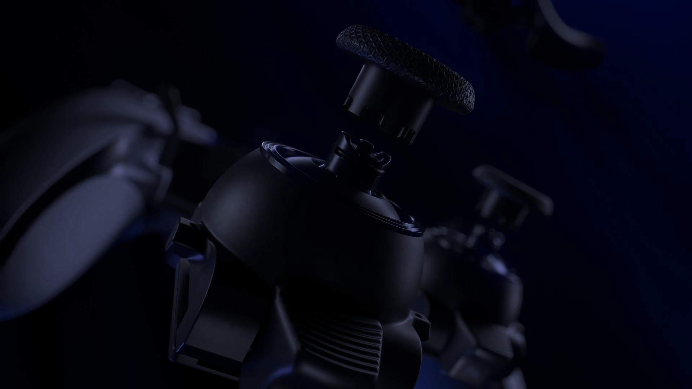

ついに来た
ソニー・インタラクティブテイメントが8月24日に、新型コントローラー「DualSense Edge」を発表した。
PS5向けのコントローラーでDualSenseの上位互換にあたり、DualSenseの機能を全て残してそこに多種多様な機能を追加しているコントローラーとなっている。
スティックやトリガーのパーツ交換や、ソフトウェア側での調整を可能にしており、カスタマイズ性が高くなっている。
DualSenseEdgeはGamescom Opening Night LIVE 2022にてティザー映像とともに発表された。
現時点で公開されている情報をまとめて行く。
スティックやトリガーのカスタマイズ性向上
- 
- 

スティックの感度とデッドゾーンをソフトウェア側で調整が可能に。サードパーティー性にはできないカスタマイズになっている。
またスティックはコントローラーで1番壊れやすい部分だが、別売りのスティックモジュールと交換が可能です。いままでは壊れてしまった場合は修理に出すか、新しくコントローラーを買っていたことを考えると嬉しいですね。
さらにトリガーごとに移動距離とデッドゾーンを好みに合わせて調整できるオプションが用意されている。これによりプレイするゲームとプレイヤーのプレイスタイルに合わせて最適に調整ができる。
トリガーはスタンダード、ハイドーム、ロードームの3種類がついてくる。スタンダード以外はまだ公開されていないようだ。
アートディレクターの栗原さんはトリガーの表面のデザインにもこだわっているようだ。(4枚目)
ボタンのカスタマイズ性向上
特定のボタンをリマッピングまたは無効化可能。
背面ボタンが追加された。背面ボタンはハーフドームとレバーの2種類がついてくる(2,3枚目)。画像に写っているものはハーフドームだと思われる。
背面ボタンにはすべてのボタン入力から一つずつ割り振ることが可能。
スティックの下部にFnボタンが2つ追加された(4枚目)。このボタンにはあとに紹介するコントロールプロファイルの素早い切り替えや、ゲーム音量やチャットバランスの調整、そしてコントローラープロファイル設定メニューへのアクセスが可能。
複数のプロファイルが保存可能
スティックの感度やデッドゾーン、背面ボタンの割り振りなどを保存しておくことができる。一つ前で紹介したFnボタンに割り振ることも可能。
小さなこだわり

専用のUSB-Cの充電ケーブルが付属され、1枚目の画像をよく見るとプレイ中でも抜けにくくなるように工夫されています。
また持ち運びに便利なキャリングケースもついてきて、付属品をまとめて収納できるそう。さらにコントローラーをケースに収納した状態でUSB接続で充電もできるように設計されているそう。
発売時期、価格
記事の投稿時点では発売日と値段は未発表です。